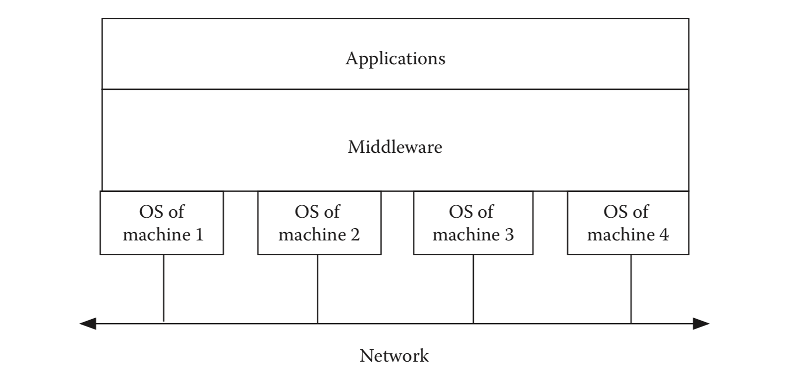
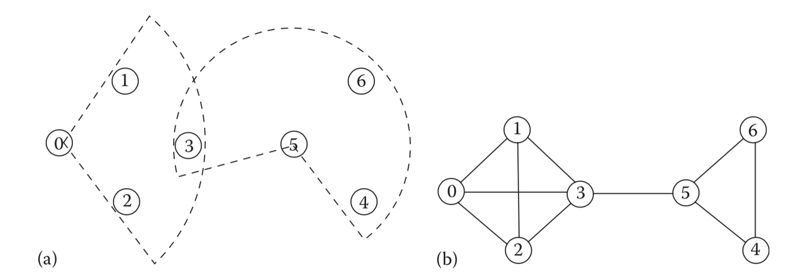
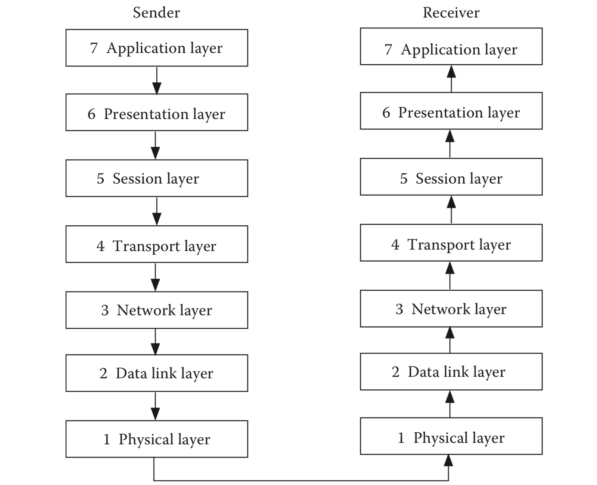
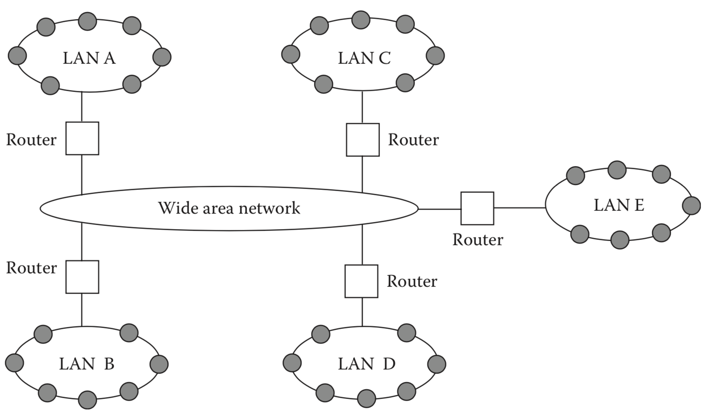
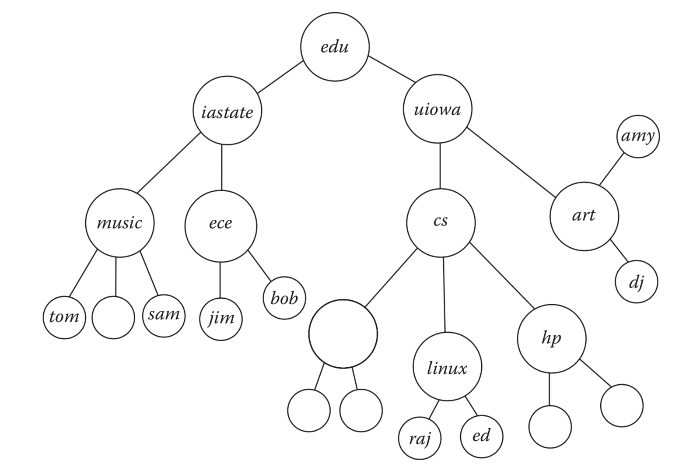
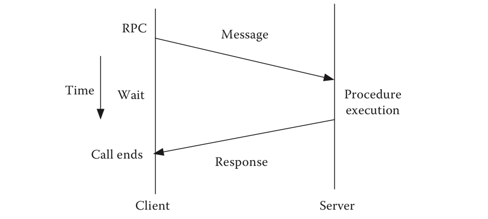
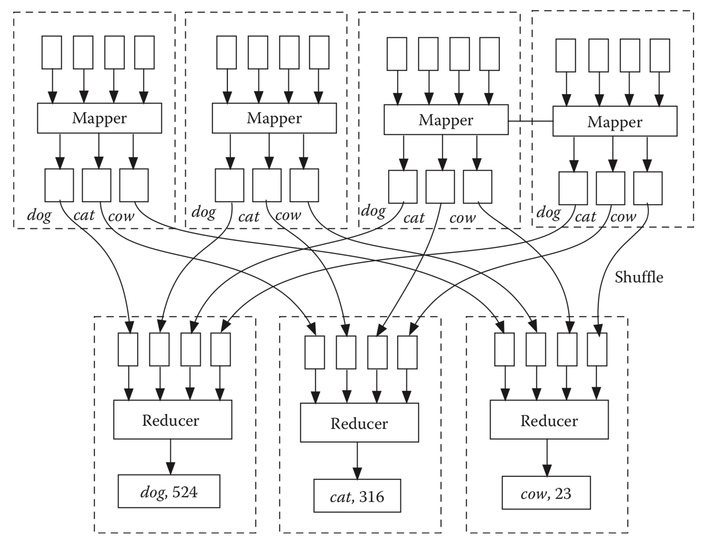

第二章 进程间通信：概述
2.1 介绍
进程间通信是分布式计算的核心。用户进程在通过网络相互连接的主机上运行，网络承载从一个进程传播到另一个进程的信号。这些信号代表数据。1 我们将进程间通信分为两部分：
网络：这涉及进程如何通过各种协议层相互通信。网络中的重要问题是路由，错误控制，流量控制，身份验证等。这是内部视图。
用户视图：用户进程具有进程间通信介质的抽象高级视图。这是外部视图。普通用户不关心通信是如何发生的。这些进程可以通过LAN，或通过因特网或这些的组合，或通过共享（虚拟）地址空间进行通信，该共享（虚拟）地址空间是在消息传递基础上创建的抽象，以便于编程。大多数工作分布式系统使用客户端 —— 服务器模型。一些系统也采用进程间通信的P2P模型，服务器和客户端之间没有区别。用户界面依赖于客户端可用的编程工具，用于与服务器或对等方通信以与另一对等方通信。有些工具是通用的，有些则是专有的。在本章中，我们将主要从用户的角度关注通信。
2.1.1 进程和线程
过程是程序的执行过程。操作系统支持处理器上的多个进程，因此多个逻辑进程（LP）可以在同一物理处理器上执行。线程是轻量级进程。与进程一样，每个线程都维护一个单独的控制流，但线程共享一个公共地址空间。多线程提高了客户端和服务器实现的透明度以及整体性能。在多线程服务器中，当一个线程在事件上被阻塞时，其他线程执行挂起的不相关操作。在多核处理器中，每个核可以支持一个或多个线程。今天的多核处理器有4-16个核心（这个数字会增长），因此这些处理器可以支持大量的线程。
2.1.2 客户端服务器模型
客户端 —— 服务器模型是用于设计分布式系统，被广泛接受的模型。客户端处理服务请求，服务器进程提供所需的服务。客户端 —— 服务器通信的一个简单示例是域名服务（DNS）客户端请求因特网域名的网络地址，DNS将地址返回给客户端。 另一个例子是像谷歌这样的搜索引擎。当客户端提交有关文档的查询时，搜索引擎会查找其服务器并返回指向可能包含该文档信息的网页的指针。请注意，客户端和服务器的名称不是唯一的，服务器可以是另一台服务器的客户端。
2.1.3 中间件
复杂的分布式系统具有显着的异质性。进程，处理器和对象可能分散在网络中的任何位置。为了简化软件开发的任务，用户不应该对这些实体的位置或它们所使用的机器类型感到困扰。开发人员不必担心集成在不同时间，不同供应商开发的企业软件应用程序，甚至不需要通过不同的协议进行通信。简化将复杂子系统连接在一起或连接软件组件的任务的软件层称为中间件。它是操作系统提供服务的扩展，逻辑上位于应用层和各个机器的操作系统层之间（图2.1）。

随着分布式应用程序的快速增长，中间件服务是增长最快的服务之一。此类别下有许多服务。一些重要的中间件服务解决了以下问题：
- 进程如何在英特网上的任何位置找到另一个已命名的进程或对象？
- 进程如何在英特网上的任何位置向多个分布式数据库发送查询？
- 如何将应用程序与编程语言和通信协议的差异隔离开来？
- 如果不了解两端操作系统的可信度，如何保证通信的安全性？
- 移动个人设备（如患者的智能手机）如何在旅行期间切换到3G/4G网络，然后当它靠近家中的蓝牙PC时切换到蓝牙？
我们首先概述网络。以下部分概述了网络和一些常用通信协议的摘要。有关网络的任何教科书都提供了更多详细信息。
2.2 网络协议
我们首先简要介绍以太网和IEEE 802.11，因为它们是有线和无线LAN最广泛使用的协议。
2.2.1 以太网
Xerox PARC的Bob Metcalfe于1973年开发了以太网。该网络由许多通过公共高速总线相互连接的计算机组成。每台机器都会不断监听通过总线传播的信号。由于总线是公用的，因此最多允许一个发送者随时发送数据。但是，没有机器知道其他机器何时想要发送数据 —— 因此几个发送者可能会尝试同时发送并导致冲突。发送者检测到冲突，在随机的时间间隔内退回，并再次尝试传输数据。该协议被称为具有冲突检测的载波侦听多路访问（CSMA/CD）。该协议保证，最终，其中一个竞争过程成为总线主控，并能够使用总线发送数据。 CSMA/CD协议非常类似于学生在课堂上与教练交谈时使用的非正式协议。在正常情况下，一个学生最多应该随时发言。但是，没有学生对其他学生想要说话的时间有先验知识，因此许多学生可能会同时尝试举手表达他们的发言意向。与此同时，每个举手的学生都会不断观察是否有其他手被抬起 —— 这就是碰撞检测。当检测到碰撞时，它们会退回并稍后尝试。最终，只有一只手被抬起，那个学生说话 —— 所有其他人都等到那个学生完成。
为了检测以太网中的冲突，每个发送器需要在开始传输之后等待最小时间段 2T，其中 T 是信号从一个节点传播到另一个节点所需的最大时间。如果一对节点之间的最大距离是 1KM，则 T\ge(10^3/(3×108))s =3.33μs 2。因此，在尝试发送操作之后，节点必须等待至少6.66μs以确保没有其他人已经开始数据传输。在节点检测到冲突之后，它在尝试重传之前等待一段时间 qT，其中 q 是随机数。可以在数学上证明该策略导致以概率1避免碰撞。
原始Xerox PARC以太网的数据传输速率仅为 3Mb/s（每秒300万比特）。在广泛使用的以太网中，传输速率为 10Mb/s。技术改进导致快速以太网（100 Mb/s）和千兆以太网（1GB/s）的出现。千兆以太网可以用作高速网络的主干网。
以太网中消息传播的延迟取决于争用程度。术语信道效率用于指定成功发送的分组数量与可以无冲突地发送的理论最大分组数量的比率。典型的以太网最多可容纳1024台机器。
2.2.2 无线网络
智能手机等便携式或手持式设备数量的急剧增长，增加了对移动计算的重视，也称为游牧计算。应用程序是多方面的：从通过智能手机或PDA访问互联网到灾难管理和战场上通信。移动用户并不总是依赖两个端点之间的无线连接。例如，携带膝上型计算机的移动用户可以在他或她从一个地方移动到另一个地方时连接到固定网络。但是，对于许多其他应用，无线连接变得必要。移动通信有几个独特的问题：便携式设备通常会断电以节省电池电量。这些活动通常是短暂的和突发性的，例如检查电子邮件或询问下一班航班是否准时。无线电干扰的可能性要高得多，使得错误控制变得困难。管理骨干将覆盖区域划分为单元格，从一个单元格漫游到另一个单元格的用户必须成功地将应用程序切换到新单元格而不会丢失或损坏数据。最后，便携式设备可能容易丢失或被盗，这带来了新的安全问题。
在本节中，我们仅讨论那些没有用于通信的有线基础设施的系统。这包括移动ad hoc网络，但不包括无线通信取代有线通信的最后一跳的网络。无线传输的显着特点如下：
有限范围：通过欧几里德距离测量的范围是有限的。它取决于发射器的功率和电池的功率。
动态拓扑：如果节点是移动的，则邻居关系不固定。 当发送方增加传输功率时，连接也会发生变化。 在无线网络上运行的算法必须能够适应网络拓扑的变化。
碰撞：来自两个不同进程的通信可能会发生冲突并使消息混乱。 需要协调传输，以免同时接收来自两个不同发送者的消息的。
IEEE 802.11定义了无线通信的标准。物理传输使用直接序列扩频（DSSS）或跳频扩频（FHSS）或红外（IR）。它定义了一系列规范（802.11a，802.11b，802.11g）（通常称为Wi-Fi），每个规范具有不同的功能。基本的IEEE 802.11使用DSSS或FHSS传输提供2.4 GHz频段1或2 Mb / s数据速率的规划。 IEEE 802.11b扩展了基本的802.11标准，允许2.4 GHz频段的数据速率为11 Mb / s，仅使用DSSS。 802.11g进一步将数据速率扩展到54 Mb / s。 802.11a还将802.11的基本数据速率扩展到54 Mb / s，但使用称为正交频分复用的不同类型的物理传输。它具有较短的传输范围和较小的射频干扰机会。 802.11a无法与802.11b或802.11g互操作。最近，802.11n协议使用多个天线将数据速率从54 Mb / s（802.11a和802.11g提供）提高到600 Mb / s。
为了控制对共享介质的访问，802.11标准规定了具有冲突避免（CSMA / CA）协议的载波侦听多路访问，该协议允许邻域中的至多一个进程进行传输。与在CSMA/CD中一样，当节点具有要发送的分组时，它首先监听以确保没有其他节点正在发送。如果信道是空闲的的，即发送方的无线电范围内没有其他人正在发送，则它发送该分组。但是，以太网中使用的冲突检测不能用于802.11的射频传输。这是因为当节点正在发送时，它无法听到系统中可能开始发送的任何其他节点，因为它自己的信号会淹没其他节点。
为了解决这个问题，作为一种可选机制，每当要发送分组时，发送节点首先发送一个包含有关分组长度信息的短的准备发送（RTS）分组。如果接收节点听到RTS，则它以短的清除发送（CTS）分组进行响应。在此交换之后，发送节点发送其分组。当通过循环冗余校验（CRC）认证成功接收到分组时，接收节点发送确认（ack）分组。这种来回交换对于避免隐藏节点问题是必要的。考虑三个节点A，B，C，使得节点A可以与节点B通信，节点B可以与节点C通信，但是节点A不能与节点C通信。结果，尽管节点A可以感知到信道是空闲的，实际上，节点C可以向节点B发送。前面描述的协议警告节点A节点B忙，因此它必须在发送其分组之前等待。 CSMA/CA显着提高了带宽利用率。
无线传感器网络由一组能够通过无线电波进行通信的原始计算元件（称为传感器节点或微粒）组成。 每个节点都有一个或多个传感器，可以感知周围环境的物理参数，并将其报告给其传输范围内的邻居。在过去的10年中，无线传感器网络的使用已经大大增加。 在一些大型应用中，微粒的数量可以扩展到几千个。协议特别注意功耗和电池寿命。 为了节省功耗，流程采用多种技术，包括定期切换到睡眠模式（消耗的电池电量非常少）。保持良好的时钟同步和发送器 —— 接收器协调是一个重要问题。
无线网络的拓扑结构取决于用于传输的功率级别。考虑图2.2a中的节点0-6。节点0,1,2在节点3的无线电范围内，但在节点4,5,6的范围之外。节点0,1,2在彼此的无线电范围内。 节点3,4,6在节点5的范围内。最后，节点4和6在彼此的范围内。 网络的相应拓扑结构如图2.2b所示。要在整个网络中进行广播，最多需要三个广播步骤 —— 这对应于网络的直径。如果使用不同的功率级别，拓扑将会改变。这里的一个有用目标是在最大化连接性的同时最小化功耗。

2.2.3 OSI 模型
属于同一网络或不同网络的用户之间的通信需要使用适当的协议。协议是一组数据编码标准和消息交换规范，发送方和接收方进程遵循这些规范来完成特定任务。协议应该在逻辑上正确且文档化，并且它们的实现应该没有错误。 国际标准组织（ISO）为各种网络应用推荐此类协议。 ISO采用的开放系统互连（OSI）模型是这种协议的框架。 它有七层（图2.3），可作为讨论其他网络协议的参考。
要了解协议层背后的思想，可以设想一下，一家公司的总裁向另一家公司的总裁发送提案。总裁向她的秘书解释了这个想法。 秘书将其转换为适当格式的提案，然后交给负责派遣信件的人员。最后，那个人发出了这封信。在接收公司，提案文件遵循相反的方向，即派遣部门的人员首先接收它，然后将提议提交给总裁的秘书，总裁将其交给总裁。

两个过程之间的通信遵循类似的模式。 每个协议层都可以与秘书或职员进行比较。 将大型任务分解为抽象层是掌握软件复杂性的可接受方式。 此外，较低层的适当错误控制机制确保最佳可能信息渗透到顶层或应用层。 OSI中不同层的角色总结如下：
应用层：该层满足用户进程的特定应用需求。例如电子邮件，公告板，聊天室，网络应用程序和目录服务。
表示层：数据表示格式可能因发送方和接收方机器而异。该层通过解决数据表示中的语法差异来解决兼容性问题。在该层中解决了Mime编码/解码，数据压缩/解压缩和加密/解密。表示层还包含用户界面组件 —— 这些组件包括ASP.NET 网络表单或Microsoft®Windows表单，其中包含用于执行配置控件的可视外观，获取和呈现业务组件数据等功能的代码。
会话层：为所有面向连接的通信建立并维护两个端点上的进程之间的连接。建立连接后，对远程计算机的所有引用都使用会话地址。这样的会话可以用于ftp，telnet等。
传输层：传输层的目标是在发送方和接收方进程之间提供端到端通信。根据所使用的错误控制机制，这种通信可能不可靠或不可靠。众所周知的传输层协议的例子是传输控制协议（TCP）和用户数据报协议（UDP）。每条消息都针对英特网上具有唯一IP地址的目标进程。使用DHCP服务器时，IP地址可以是永久IP地址也可以是临时地址。请注意，消息尚未分组。
网络层：网络层提供机器到机器的通信，负责消息路由。消息被分解为具有规定大小和格式的分组。每个数据包都被视为一个自治实体，并通过路由器路由到目标节点。两种通信是可能的：在虚拟电路中，首先，建立从发送器到接收器的连接，然后分组以与它们被发送相同的顺序到达目的地。数据报不需要连接建立阶段。可以无序地传递消息，并且传输层处理分组重新排序的任务。该层中的一些重要问题是通过最短路径或最小跳数进行路由，避免在分组交换期间出现死锁等。在LAN中，路由活动不存在。 IP是WAN中的网络层协议。
数据链路层：该层将比特流组合成帧并附加错误控制位（如循环冗余码）以防止传输中的消息损坏。接收器确认每帧的接收，然后发送下一帧。不同的数据链路协议使用不同的方案来发送ack。通过适当的对话处理重传丢失或损坏的帧的请求。
物理层：该层处理如何通过通道发送比特位。在电子通信中，问题是用什么电压电平（或什么频率）来表示0或1。在光通信中，相应的问题是什么样的光信号（即幅度和波长）是通过光纤链路发送以表示0或1。
协议层形成协议栈或协议套件。协议栈定义了职责分工。此外，在每一层中，结合了一些错误控制机制以防止该层的可能的故障。这可以保证将最佳信息转发到上层。 OSI协议栈提供了一个框架，旨在鼓励在开放系统中开发非专有软件。真正的协议套件并不总是遵循OSI指南。但是，在大多数情况下，属于真实协议的特定层的活动可以映射到OSI协议的一个或多个层的活动。
2.2.4 IP
网络互联旨在通过互联网上的一对计算机提供无缝通信系统。 英特网协议（IP）定义了将数据从一台计算机（也称为主机）发送到另一台计算机的方法。寻址是英特网抽象的关键部分。每台计算机至少有一个IP地址，可以将其与英特网上的所有其他计算机区分开来。要发送的消息被分成数据包。每个数据包都包含发送方和接收方的英特网地址。 IP是一种无连接协议，这意味着它不需要终端主机之间的连续连接。每个数据包都被发送到路由器（也称为网关），该路由器读取目标地址并将数据包转发到相邻路由器，后者又读取目标地址等，直到一个路由器识别出数据包的目的地是计算机在其附近或域中。然后该路由器将数据包直接转发到指定地址的计算机。每个数据包可以通过英特网采用不同的路由，数据包可以按照与传输顺序不同的顺序到达。这种服务是一种尽力而为的服务。如果接收必须没有错误并且接收顺序必须与传输顺序相同，则需要另一种协议，如TCP。
目前使用最广泛的IP版本仍然是具有32位地址的IP版本4（IPv4）。但是，IP版本6（IPv6）的采用正在增长。 IPv6使用128位地址，可以容纳更多的英特网用户。 IPv6包括IPv4的功能，但不提供向下兼容性 —— 尽管这两种实现可以通过双栈服务器共存。除扩展的地址空间外，IPv6的部署还旨在更好地处理移动性，服务质量（QoS），多播，隐私扩展等。虽然全球IP6流量目前略高于1％，但计划在未来几年内取代IP4。
在以太网上，每个源节点和目标节点都有一个48位硬件地址，称为介质访问控制地址（MAC地址），存储在其网络接口卡中。 MAC地址由数据链路层协议使用。使用地址解析协议（ARP）将IP地址映射到48位硬件地址。 ARP客户端和服务器进程在使用IP over Ethernet的所有计算机上运行。
2.2.5 传输层协议
两种常见的传输层协议是UDP和TCP。
UDP / IP：UDP使用IP发送和接收数据包，但数据包接收可能不遵循传输顺序。UDP是一种无连接协议。应用程序必须确保整个消息以正确的顺序到达。UDP提供IP层未提供的两种服务。它提供端口号以帮助区分不同的用户请求和校验和功能，以验证数据是否完好无损。UDP可以检测错误但丢弃有错误的数据包。想要节省处理时间的网络应用程序，因为消息很短或偶然的错误没有显着影响，则倾向于使用UDP。其它则使用TCP。
TCP / IP：通过IP运行的TCP负责监督发送方和接收方之间可靠，高效的数据传输。数据可能在传输过程中丢失。 TCP通过触发重传来增加对丢失数据恢复的支持，直到数据以正确的顺序正确且完全接收为止。通过这样做，TCP在发送方和接收方进程中的一对端口之间实现可靠的流服务。
与UDP不同，TCP是面向连接的协议 —— 因此实际数据通信之前是连接建立阶段，并由连接终止阶段终止。TCP中错误控制背后的基本思想是在传输之前向数据包添加序列号，并监视从目标进程接收的每个数据包的确认。如果在合理估计周转延迟的时间窗口内没有收到确认，则重传该消息。接收进程仅在收到具有预期序列号的数据包时才发送确认。 传输错误可能由于各种原因而发生。图2.4显示了英特网的一部分。假设两个用户1和2中的每一个同时以8 MB / s的速率向用户3发送消息。但是，用户3所连接的LAN D无法以超过10 MB / s的速率处理输入数据。在这种情况下，有两种可能的选择：
- 选项1：路由器可以丢弃LAN D无法处理的数据包。
- 选项2：路由器可以将额外的数据包保存在本地内存中，并在以后将其传输到LAN D。
选项2不排除丢包，因为每个路由器的内存数量有限。在许多任务中，TCP / IP有助于恢复丢失的数据包，重新排序它们，并在将重复数据包传送到目标进程之前拒绝它们。为了有效使用传输介质，TCP允许在接收到第一分组的ack之前发送多个数据分组。

TCP有一种机制来估计往返时间并限制数据速率以消除拥塞。 TCP / IP提供了一个通用框架，可以在其上构建许多服务，并且可以实现消息传递分布式算法。尽管偶尔会有批评，但它已经成功地执行了多年的使命，容忍了网络技术的许多变化。
2.2.6 使用套接字的进程间通信
套接字是一对进程之间通信的抽象端点。由Berkeley Software Distribution作为BSD UNIX的一部分开发，套接字集成到操作系统的I / O部分。套接字有两种类型：流套接字和数据报套接字。流套接字使用TCP / IP，数据报套接字使用UDP / IP。使用套接字进行客户端 —— 服务器通信所涉及的步骤如下：首先，客户端进程通过进行套接字系统调用来请求操作系统创建套接字，并将标识套接字的描述符返回给客户端。然后它使用连接系统调用连接到服务器的端口。建立连接后，客户端与服务器通信。 与客户端一样，服务器进程也使用套接字系统调用来创建套接字。一旦创建，绑定系统调用将为套接字分配端口号。如果协议是UDP之类的无连接协议，则服务器已准备好接收数据包。对于像TCP这样的面向连接的协议，服务器首先等待通过调用listen过程来接收连接请求。服务器最终使用accept系统调用接受连接。在此之后，沟通开始了。通信结束后，连接将关闭。 端口号是16位实体。在216个可能的端口中，一些（0-1023）保留用于标准服务。例如，服务器端口号21用于FTP，端口22用于安全Shell（SSH）远程登录，端口号23用于telnet。 Go 中的套接字程序示例如下所示：
package main
import (
"fmt"
"io"
"log"
"net"
"os"
)
func Server() {
// Listen on TCP port 2000 on all available unicast and
// anycast IP addresses of the local system.
l, err := net.Listen("tcp", ":2000")
if err != nil {
log.Fatal(err)
}
defer l.Close()
for {
// Wait for a connection.
conn, err := l.Accept()
if err != nil {
log.Fatal(err)
}
// Handle the connection in a new goroutine.
// The loop then returns to accepting, so that
// multiple connections may be served concurrently.
go func(c net.Conn) {
// Echo all incoming data.
io.Copy(c, c)
// Shut down the connection.
c.Close()
}(conn)
}
}
func Client() {
conn, err := net.Dial("tcp", "127.0.0.1:2000")
if err != nil {
log.Fatal(err)
}
defer conn.Close()
go mustCopy(os.Stdout, conn)
mustCopy(conn, os.Stdin)
}
func mustCopy(dst io.Writer, src io.Reader) {
if _, err := io.Copy(dst, src); err != nil {
log.Fatal(err)
}
}
func help() {
fmt.Println("usage:")
fmt.Println(" ./echo server start server")
fmt.Println(" ./echo client start client")
}
func main() {
if len(os.Args) == 1 {
help()
} else if os.Args[1] == "server" {
Server()
} else if os.Args[1] == "client" {
Client()
} else {
help()
}
}
2.3 命名
在本节中，我们将研究在TCP/IP或UDP/IP之上构建重要中间件服务：命名服务。 名称是字符或字节的字符串，它标识实体。实体可以是任何东西 —— 它可以是用户，机器，进程或文件。名称的示例是WWW上的网站的URL。命名是一种基本服务，使用该服务可以仅通过名称来识别和访问实体，无论它们位于何处。用户可以通过向文件管理器提供文件名来访问文件。要登录远程计算机，用户必须提供登录名。在WWW上，域名服务（DNS）将域名映射到IP地址。用户不能发送电子邮件，除非他们可以通过电子邮件地址相互命名。请注意，地址也可以视为名称。ARP使用IP地址查找接收机器的MAC地址。
尽管给定实体可能具有不同的别名，但每个名称必须与唯一实体相关联。例如，考虑名称Alice。它可以与宇宙中的独特人物相关联吗？不可以。可以使用唯一的电话号码识别Alice，但Alice可能有多条电话线，因此她可能有几个电话号码。如果Alice转换工作，那么她可以搬到新的城市，她的电话号码也会改变。我们怎么知道我们是否与同一个Alice进行通信？
这突出了命名中位置独立性的重要性。请注意，手机号码与位置无关。 Gmail或Hotmail帐户中的电子邮件地址也不依赖于任何物理计算机，因此与位置无关。一致的命名方案，位置独立性和可扩展的命名服务是分布式应用程序可行命名系统的三个基石。
命名服务跟踪名称及其引用的对象的属性。给定名称，服务会查找相应的属性。这称为名称解析。对于像LAN这样的单个域，这非常简单。但是，在英特网上，有许多网络和多个域3，因此名称服务的实现并非无足轻重。
名称遵循树结构，父项是其下的子树名称的通用后缀。因此，cs.uiowa.edu是属于域uiowa.edu的名称。只有获得域uiowa.edu管理员的许可，才能分配计算机科学部门的前缀cs。但是，对于名称hp.cs.uiowa.edu或linux.cs.uiowa.edu，它是计算机科学部门的系统管理员，它分配前缀hp或linux。通过将名称树作为子树附加到更高级别的公共父级，可以将两个不同的名称空间合并到单个名称空间中。图2.5显示了生成电子邮件ID的命名树。叶子反映了用户的名字。

2.3.1 域名服务
考虑翻译完全限定名称cs.uiowa.edu的任务。DNS服务器在逻辑上按照与命名层次结构匹配的层次结构排列。每个服务器都对命名层次结构的一部分具有权限。根服务器具有对.edu，.com，.org和.gov等顶级域的权限。 .edu的根服务器不知道uiowa.edu上的计算机名称，但它知道如何到达服务器。组织可以将其所有域名放在单个服务器上，也可以将它们放在多个不同的服务器上。
当DNS客户端需要查找名称时，它会查询DNS服务器以解析名称。将DNS可视化为包含超过十亿个表单条目（名称，IP地址）的中心表。显然，数百万用户不能同时访问这种表的单个副本。事实上，没有人在任何地方维护这种规模的单一集中式数据库。它作为一个大型分布式数据库运行。为了获得可用性，该表的不同部分被大量复制并分布在不同的地理位置。您的英特网服务提供商或组织的系统管理员很可能会提供部分DNS服务的副本。每个服务器包含指向其他域名服务器的链接。 DNS是复制如何增强可用性和可伸缩性的一个很好的例子。
要解析名称，每个解析程序都会将指定的名称放入DNS请求消息中，并将其转发到本地服务器。如果本地服务器对所请求的名称具有唯一权限，则它会立即返回相应的IP地址。当您想要向同一办公室或同一机构的同事发送消息时，可能会出现这种情况。但是，请考虑uiowa.edu的用户在uiowa的本地DNS服务器的权限之外寻找像boomerang.com这样的名称。在这种情况下，本地服务器成为客户端并将请求转发到处理.edu的上层DNS服务器。但是，由于.edu中没有服务器知道哪个服务器对boomerang.com有权限，因此简单的解决方案是将请求发送到根服务器。根服务器可能没有直接权限，但它知道可能具有权限的下一级服务器的地址。以这种方式，请求通过服务器层次结构传播，最终到达对请求的名称具有权限的服务器。返回的IP地址最终通过返回路径到达解析器。
顶级名称的名称服务器不会经常更改。实际上，根服务器的IP地址很少会改变。根服务器如何知道哪个服务器可能拥有所需域boomerang.com的权限？在域注册时，注册人会通知DNS注册管理机构有权对该域拥有权限的名称服务器的IP地址。添加新子域后，将更新注册表。
如果没有各种级别的复制和缓存，前面介绍的机制将无法工作。随着数百万用户同时使用WWW，根服务器处或附近的流量将非常大，系统将崩溃。复制根服务器是减少负载的第一步。根据响应的及时性，负责本地节点的DNS服务器使用其中一个根服务器。更重要的是，每个服务器都有一个缓存，用于存储最近解析过的名称的副本。每次新查找时，都会更新缓存，除非缓存已包含该名称。在将名称转发到远程DNS服务器之前，首先要查找客户端缓存。如果在那里找到名称，则翻译速度最快。
命名服务具有良好的局部性 —— 刚刚解决的名称很可能在不久的将来再次被访问。当然，缓存加快了名称解析，本地DNS服务器能够提供有效的服务。
域名中的级别数的上限为127，名称中的每个标签最多可包含63个字符，只要整个域名的总长度不超过255个字符。但实际上，一些域名注册管理机构需要更短的限制。
2.3.2 移动客户端的名字服务
将移动客户端的名称映射到地址非常棘手，因为它们的地址可能会在没有通知的情一种简单的翻译方法使用广播。要查找Alice，广播查询Alice在哪里？当前托管Alice的机器或Alice连接的访问点将返回其地址以响应查询。在基于以太网的LAN上，这是ARP的本质，其中IP地址用于查找具有该IP地址的机器的MAC地址。虽然在可以通过可用硬件轻松实现广播的以太网上这是可以接受的，但在较大的网络上，这是低效的。在这种情况下，位置服务填补了这一空白。
位置服务：命名服务首先将每个名称转换为唯一标识符。例如，通过电话簿实现的命名服务将始终将您的姓名映射到您的本地电话号码。单独的位置服务将接受此唯一标识符作为输入并返回客户端的当前地址（在此示例中，是客户端的当前电话号码）。
虽然ARP实现了简单的位置服务，但是一般的位置服务依赖于消息重定向。该实现与呼叫转发类似。移动IP使用归属代理进行位置服务。在离开家或从一个位置移动到另一个位置时，客户端会更新本地代理关于其当前位置或地址的信息。与客户的通信被作为转交地址指向归属代理。归属代理将消息转发给客户端，并使用客户端的当前地址更新发送者。
2.4 远程过程调用
考虑为一组客户端提供服务的服务器。在客户端和服务器是驻留在同一台机器上的不同进程的简单设置中，通信仅使用系统调用。例如，假设服务器为许多并发进程分配内存。客户端可以使用两个函数：allocate和free。函数allocate(m)通过返回指向内存中空闲块的指针，将m个内存块分配给调用客户端。函数free(addr，m)从指定的地址addr释放m个内存块。在同一台机器上，实现很简单。但是，在分布式系统中，无法保证（实际上不太可能）客户端和服务器将在同一台计算机上运行。过程调用可以跨越机器边界和域边界。这使得过程调用的实现变得更加复杂。远程过程调用（RPC）是一种过程调用，可帮助客户端与运行在可能属于不同网络和不同管理域的其他计算机上的服务器进行通信。[^4] 对共享内存的支持已经消失。RPC的任何实现都必须考虑将客户端的调用参数传递给服务器计算机并将响应返回给客户端计算机。
2.4.1 实现 RPC
调用远程过程的客户端阻塞自己，直到它从服务器接收到结果（或信号完成呼叫的消息）。请注意，客户端和服务器具有不同的地址空间。更糟糕的是，不排除崩溃。为了实现透明性，客户端的调用将重定向到其本地操作系统中的客户端存根过程。 存根过程为远程函数提供本地过程调用接口。首先，客户端存根（1）将调用的参数打包成消息，（2）将消息发送到服务器。然后客户端阻塞自己。将调用参数打包到消息中的任务称为参数编码。
在服务器端，服务器存根处理该消息。它的作用是对客户端存根的作用的补充。服务器存根首先解压缩调用的参数（这称为解码），然后调用本地过程。结果被封送并发送回客户端的机器。客户端存根解组参数并将结果返回给客户端（图2.6）。 RPC中存根的操作总结如下：
| 客户端存根 | 服务器端存根（重复下面的过程） |
|---|---|
| 将参数打包到消息中 | 没有消息 → 跳过 |
| 发送消息到远程机器 | 解包调用参数 |
| 没有结果 → 跳过 | 调用服务端过程 |
| 接受结果，解包 | 将结果打包到消息中 |
| 返回到客户端程序 | 发送给客户端 |

客户端和服务器机器之间缺乏相似性会增加RPC实现的复杂性。例如，客户端计算机可以使用大端格式，服务器计算机可以使用小端格式。传递指针是另一个令人头痛的问题，因为地址空间不同。要解决此类问题，客户端和服务器需要事先就RPC协议达成一致。
客户端和服务器之间的同步可以采用各种形式。虽然上面列出的流程阻塞客户端直到结果可用，但也存在非阻塞版本。在非阻塞RPC中，客户端在启动RPC后继续执行不相关的活动。当服务器发送结果时，会通知客户端，并接受结果。 最后，网络故障为RPC的语义增加了新的变化。假设包含客户端RPC的消息在路由服务器时丢失。客户端在超时后等待并重新启动RPC几乎没有其他选择。但是，如果由于某种原因第一个RPC没有丢失但是卡在网络的某个地方，那么RPC有可能被执行两次。在某些情况下，它没什么区别。例如，如果RPC从远程服务器读取文件的块，则客户端可能不关心是否多次检索到相同的块。但是，如果RPC在远程银行中扣除您的帐户并且操作不止一次，那么这会导致您很不满意。一些应用程序需要至少一次语义，而另一些应用程序需要最多一次语义或完全一次语义。
2.4.2 Sun 的 ONC/RPC
为了在网络文件服务中实现客户端 —— 服务器通信，Sun Microsystems 5开发了开放式网络计算RPC（ONC / RPC）机制，该机制也与许多UNIX安装一起打包。可以通过UDP / IP或TCP / IP进行客户端 —— 服务器通信。接口定义语言（称为外部数据表示[XDR]）将一组过程定义为服务接口的一部分。每个接口都有一个唯一的程序号和版本号，这些都可以从中央机构获得。客户端和服务器必须验证它们使用的是相同的版本号。这些数字作为请求消息中的参数从客户端传递到服务器。 Sun ONC使用RPC编译器（rpcgen）自动生成客户端和服务器存根。Sun RPC允许将单个参数从客户端传递到服务器，并将单个结果从服务器传递到客户端。因此，如果存在多个参数，则必须将它们作为结构化变量传递。在服务器端，端口映射服务常驻进程接收RPC请求。客户端可以很容易找到端口映射器，因为它始终位于指定端口（端口111）上。 ONC通过三个参数识别每个过程：程序号，版本号和过程号。过程0是空过程。客户端查询端口映射器以找出程序的端口号及其版本号。端口映射器将RPC绑定到客户端和服务器计算机上的指定端口。许多不同类型的身份验证都可以包含在ONC / RPC中 —— 这些身份验证包括UNIX传统的（uid，gid）到Kerberos类型身份验证服务（请参阅第19章）。
2.5 远程方法调用
远程方法调用（RMI）是面向对象环境中RPC的概括。该对象驻留在与客户端计算机不同的服务器计算机上。这称为远程对象。与之关联的数据实例跨机器分布的对象称为分布式对象。分布式对象的示例是在两台或更多台机器上复制的对象。远程对象是分布式对象的特例，其中关联数据可在一台远程计算机上使用。
要实现RMI的范围（相对于RPC），请回忆一下使用套接字来实现RPC。在RPC中，对象按值传递；因此，远程对象的当前状态被复制并从服务器传递到客户端，完成必要的更新，并且将对象的修改状态发送回服务器。如果多个客户端尝试通过以这种方式调用方法来同时访问/更新远程对象，则一个客户端所做的更新可能不会反映在另一个客户端所做的更新中，除非这些更新是串行化的。此外，在服务器和各种客户端之间传播远程对象的多个副本将消耗网络的大量带宽。
RMI以透明的方式解决了这些问题。 java.rmi包的各种类允许客户端访问驻留在远程主机上的对象，就像通过引用而不是通过值一样。一旦客户端获得对远程对象的引用，它就可以调用这些远程对象上的方法，就好像它们存在于本地一样。通过远程对象引用对对象进行的所有修改都反映在服务器上，并可供其他客户端使用。客户端不需要知道包含远程对象的服务器位于何处 —— 它只通过称为代理的接口调用方法。代理是一个客户端存根，负责编组调用参数并解组服务器的结果（图2.7）。在服务器端，称为骨架的服务器存根解码客户端的调用，调用所需的方法，并将结果编组回客户端。对于每个客户端，都有一个单独的代理，它是客户端地址空间中的一个单独对象。
当多个客户端同时访问远程对象时，方法的调用将被序列化，就像在监视器中一样。6某些客户端在轮到他们之前被阻塞，而其他客户端则继续处理。串行化机制的实现对于本地对象来说是微不足道的，但对于远程对象来说，它是棘手的。例如，如果服务器处理阻塞并且访问远程对象的当前客户端崩溃，则将永久阻止所有客户端。另一方面，如果客户端处理阻塞，则客户端需要在其代理发出方法调用之前阻塞自身。客户端如何知道另一个客户端是否已经为远程对象调用了一个方法？显然，远程对象的可串行化的实现需要客户端之间的额外协调。
Java RMI以不同方式传递本地和远程对象。所有本地对象都按值传递，而远程对象则通过引用传递。在按值调用时，对象的状态将被显式复制并包含在方法调用的主体中。通过引用调用的示例如下：每个代理包含（1）服务器S1的网络地址包含远程对象X（2）该服务器中的对象X的名称。作为另一服务器S2中的RMI的一部分，客户端将代理（包含对X的引用）传递给服务器S2。现在S2可以在S1上访问X。由于每个进程都在相同的Java虚拟机上运行，因此尽管硬件平台存在异构性，但在解码参数后不需要进一步的工作。
2.6 消息
大多数分布式应用程序使用消息传递实现。消息传递层逻辑上位于TCP / IP或UDP / IP层之上，但位于应用层之下。TCP或UDP层上的套接字实现有助于进程使用特定的套接字地址相互寻址。
2.6.1 瞬态和持久消息
消息可以是暂时的或持久的。 在瞬态通信中，除非接收器在消息传递时处于活动状态并在应用程序的生命周期内检索它，否则将丢失消息。 一个示例是通过共享内存多处理器中的消息缓冲区进行进程间通信。 在持久通信中，消息不会丢失，而是保存在缓冲区中以备将来检索。 收件人最终会收到消息，即使他们在邮件传递时是被动的。 一个例子是电子邮件通信。 消息通过一系列路由器从源发送到目的地，每个路由器管理一个消息队列。
2.6.2 流
考虑将视频剪辑从一个用户发送到另一个用户。 这样的视频剪辑是帧流。通常，流是数据项的序列。 使用流的通信需要在发送方和接收方之间建立连接。 在用于多媒体应用的流中，QoS基于流中条目之间的时间关系（如每秒帧数或传播延迟），其实现取决于可用网络带宽，路由器中的缓冲区空间 ，以及终端机器的处理速度。 保证QoS的一种方法是在通信开始之前保留适当的资源。 RSVP是一种用于在路由器上保留资源的传输级协议。
2.7 网络服务
网络服务提供了一种不同的方式，即基于通过WWW相互通信的机器，将英特网用于各种应用程序。 可以使用来自不同机器托管的网站的数据在机器上设计应用程序。 例如，用户可以使用城市公交网站在她的智能手机上实施服务，以获得有关最新公交时刻表的信息，并设置警报以提醒在特定车站赶上公交车的出发时间。 另一个用户可以通过从一家受欢迎的餐馆的网站上提取数据来设计应用程序，这样每当他们在菜单上有她的特殊晚餐时，她就会收到一条短信。 网络服务是一种有助于集成应用程序的中间件。 它们有助于应用程序相互通信。
从历史上看，微软率先将网络服务作为其.NET计划的一部分。 今天，大多数网络服务都基于广泛用于跨平台数据通信的XML - 这些包括简单对象访问协议（SOAP）; 网络服务描述语言（WSDL）和通用描述，发现和集成规范（UDDI）; 和Java 网络服务。
WSDL描述了网络服务的公共接口。 它是一种基于XML的服务描述，描述了客户端应如何使用网络服务进行通信。 这些包括与其目录中列出的网络服务交互所需的协议绑定和消息格式。 客户端可以找出网络服务上可用的功能，并使用SOAP进行函数调用。
SOAP允许使用任何传输协议（如TCP或HTTP或SMTP）将包含结构化数据的单向消息从一个进程发送到另一个进程。 当收件人将回复发送回发件人时，邮件交换完成。 可以使用Java API将基于XML的RPC实现用于在服务器应用程序上创建RPC。 将RPC调用映射到SOAP消息的标准方法允许基础结构在运行时自动在方法调用和SOAP消息之间进行转换，而无需重新设计网络服务平台周围的代码。
XML实际上是一种无处不在的标准。 现在的注意力集中在从XML-UDDI，WSDL和SOAP派生的下一级标准上。 用于访问存储在不同数据库中的信息的网络服务的快速增长使得一些人对隐私问题保持警惕。
2.8 事件通知
事件通知系统有助于在异构平台上建立分布式对象之间的异步通信形式，并且有许多应用。 一个例子是发布 —— 订阅中间件。考虑不同航空公司在WWW上定期发布的机票。您计划在夏威夷度假，因此当您从最近的机场到夏威夷的往返机票价格低于400美元时，您可能希望收到有关活动的通知。 这说明了发布 —— 订阅通信的本质。在这里，您是活动的订阅者。出版商和订户都不需要彼此了解任何事情，但可以通过经纪安排进行沟通。此类事件通知方案类似于集中式环境中的中断或异常。 根据定义，它们是异步的。
以下是其他几个例子。 每当车库门打开，或者有一个正在运行的水龙头，或者停电时，智能家居可以在远离家的地方向其所有者发送电话。 在协作工作环境中，当每个人都完成当前工作阶段时，流程可以恢复下一阶段的工作 —— 这些工作可以作为事件通知。 在医疗机构的重症监护室中，医生可以定义需要通知的事件。股票持有人可能希望在他们喜欢的股票价格上涨超过5％时得到通知。如果转机航班的时间发生变化，航空公司的乘客希望通过智能手机中的应用程序收到通知。
Apache River（最初由Sun Microsystems开发的Jini）为基于Java的平台提供事件通知服务。 它允许一个Java虚拟机（JVM）中的订阅者从另一个JVM接收感兴趣的事件的通知。基本组成部分如下：
- 事件生成器界面，用户可以在其中注册他们感兴趣的事件。
- 远程事件侦听器接口，通过调用notify方法向订阅者提供通知。 每个通知都是远程事件类的实例。 它作为参数传递给notify方法。
- 第三方代理扮演观察员的角色，帮助协调向一组订户提供类似事件。
在iPhone或iPad上运行的苹果iOS使用推送通知服务，通过短文本消息或声音字节向用户发送事件通知。
2.9 虚拟化：云计算
云计算是一种环境，您的数据和/或程序不会由您自己的计算机存储或管理，而是由第三方完成：云，即将其作为服务提供。您可以通过作为每个计算机系统一部分的浏览器访问您的数据或计算结果。云计算是几种技术的融合，如分布式计算，集群计算和Web服务。
甚至在云计算这个术语被创造出来之前，这个概念在不同的名称下得到了发展。现在，所有网络应用程序都包含在云计算中。我们中的许多人使用Google邮件或Yahoo邮件来存储和访问电子邮件。这些电子邮件存储在各公司管理的服务器中。 Google文档允许用户将文档上传，编辑和检索到Google的数据服务器以进行共享。YouTube托管了数百万用户上传的视频，并允许我们无需任何费用即可与他人存储和分享我们的视频。我们中的许多人经常使用Flickr和Picasa上传和分享数百万张个人数码照片。像Facebook这样的社交网站允许会员发布存储在网站服务器中的图片和视频。
亚马逊的弹性计算云（EC2）虚拟计算环境不仅适用于专门的云端爱好者，也适用于普通用户，可能是满足所有需求的最佳选择。用户不会购买服务器，软件，网络设备等，而是购买一套完全外包的在线服务。用户无需关心这些服务器在地理位置上的位置 —— 它们都是云的一部分，驻留在单个数据中心或分布在多个数据中心并由单个组织控制。7这不仅仅订阅了虚拟化的概念，但也强化了“按使用付费”或“效用计算”的概念，用户以计费价格换取服务。没有前期投资，它允许灵活地扩展资源。最重要的是，这些服务的当前价格（截至2013年12月）是非常合理的 —— 对于一个小时左右的平均学生用户工作，它只花费几美分。
要使用Amazon的EC2等云服务，请注意Amazon Web服务（AWS）是Amazon提供的所有服务的保护伞，包括EC2。 因此，一旦用户注册AWS，她就可以转到EC2链接创建她的虚拟服务器并使用她的远程桌面连接访问它。
2.9.1 云计算的分类
一些云平台提供专有开发和应用程序包的混合，而其他云平台只是计量服务。为了区分各种形式，云服务分别被分为软件即服务（SaaS），平台即服务（PaaS）和基础架构即服务（IaaS）：
SaaS：这是这些服务中最基本的。想想Google Docs。创建Google帐户是免费的。拥有帐户后，您只需登录google.com/docs即可立即访问功能强大的文字处理程序，电子表格应用程序和演示文稿创建程序。 Google为您提供所有这些服务，您可以从网络浏览器管理所有内容，而无需在您的计算机上安装任何其他内容。 Dropbox，Salesforce.com等是符合SaaS资格的应用程序，基本服务是免费的。
PaaS：PaaS促进了将在特定云环境中运行的应用程序的开发。人们可以利用已建立环境的可用基础设施和工具。这也使开发人员能够快速将其应用程序提供给广大受众。例如，在Facebook平台上，开发人员可以编写新的应用程序，并将其提供给该平台的其他用户。 Google Apps提供的API和功能可以帮助开发人员利用其不同的服务（如地图和日历）来构建Web应用程序。这些对于开发轻量级Web应用程序非常方便。
IaaS：这是最全面的云平台，主要供全职开发人员或大型企业客户使用，或者由具有IT技能但没有基础设施的临时用户使用。虽然SaaS允许使用云应用程序，而PaaS允许您开发应用程序，但IaaS为您提供了在云环境中开发，运行和存储应用程序的基础架构。 IaaS的好处是开发人员可以获得几乎无限的存储和计算能力，而无需现场任何物理硬件。 Amazon EC2是IaaS的一个很好的例子。从最小的应用程序到启动业务所需的全面网站，EC2提供必要的云基础架构。用户可以自由地使用各种工具进行开发，从MySQL到Ruby on Rails，并且可以从多个Linux或Windows环境中进行选择。
随着云计算的发展，数据中心的数量也在快速增长。每个数据中心都配备了数千个处理器，这些处理器的总体计算速度可以达到petaflop系列，几乎无限的存储空间和高速网络设施。许多这些数据中心都是自动和远程管理的，没有任何操作人员在身边。能源是这些数据中心的一个重要预算项目，以及冷却所需的用水量。冷却高密度服务器场所需的大量水使得水管理成为数据中心运营商日益增长的优先事项。一个15兆瓦的数据中心每天可以使用多达360,000加仑的水[M09]。
2.9.2 MapReduce
现代分布式系统的一个重要特征是它们需要处理的大量数据。 照片和音频和视频录制不断创建并传递到社交网站。 亚马逊和eBay经常处理来自世界各地的大量数据。 搜索引擎Google，Yahoo和Bing经常处理大量数据以处理来自世界各地的用户查询。 大规模并行数据处理引擎已成为在这些场景中生成即时响应所不可或缺的。 为了攫取大量数据，谷歌于2004年发明了MapReduce，2007年，雅虎将其纳入了开源项目Hadoop，该项目本质上是一个操作系统，可以使MapReduce程序在计算集群上运行。
MapReduce算法有效地利用了许多大规模或数据密集型问题所展示的内置并行性。 要设计这样的算法，必须从两个基本操作开始：map和reduce。 函数映射将特定函数应用于列表的所有元素，并且它们的执行意味着并行运行。 为每个进程或线程分配一个这样的任务。 函数reduce是一个聚合操作，它接受map操作的输出并聚合到最终结果。
MapReduce中的基本数据结构是
{单词计数问题伪代码}
1: Mapper (directory D; file f)
2: for every term “dog” in file f do
3: Output (“dog”, value 1)
1: Reducer (term “dog”; set of values)
2: total: = 0
3: for each t in set of values do
4: total: = total + t
5: Output (“dog”, total)
Mapper的几个实例可以在不同的机器上运行，并且可以为键cat执行另一个映射任务。MapReduce的执行框架保证通过shuffle阶段将与同一个键相关联的所有值集中在reducer中。结果，字数统计算法添加了与每个key相关的所有计数，这也是一个键值对。 因此，MapReduce任务的基本框架可归纳如下：
Map: 〈key, value〉→ list of 〈key, value〉
{This is the intermediate 〈key, value〉 pair}
Reduce: 〈key, list of values〉 → list of 〈key, value〉
在前面的示例中，用于计算dog的出现次数的映射器的输出是列表，
重要的是要认识到尽管MapReduce可以直接用于一大类具有令人尴尬的并行特征的问题，但许多算法不能简单地表达为单个MapReduce任务。必须将复杂算法分解为一系列任务，并且必须编排数据路由，以便一个任务的输出成为另一个任务的输入。这些包括需要在达到收敛之前重复的迭代任务。

2.9.3 Hadoop
在集群级并行性的世界中，实现消息传递接口（MPI）的库或者诸如OpenMP之类的语言扩展用于共享存储器并行性是众所周知的。 这些逻辑抽象隐藏了流程级别的许多同步和通信细节。 但是，为了顺利实现此类抽象，开发人员必须跟踪这些方面，以及如何为工作人员提供资源。 这也适用于MapReduce。 Apache Hadoop是MapReduce所需的基础架构的开源实现。
Hadoop使用主从架构。 主节点（也称为NameNode）从用户接收作业。 输入数据被分成几部分并存储在Hadoop分布式文件系统（HDFS）中。 物理上，这些数据分散在系统中的大量节点上。 主节点将作业的组件（映射进程）分配给各个从属节点（也称为DataNode）。 每个从站都会贡献一些本地存储和计算能力来解决问题。 当从节点完成其任务时，它们将结果返回给主节点。 主服务器运行reduce过程以聚合各个部分并生成结果。 如有必要，从节点可以进一步细分任务并将它们分配给其他从节点。 总的来说，这样的实现涉及数千个计算节点，并且可以处理数据的数据。 DataNode故障在此框架中自动处理。 Hadoop是用Java编写的。
2.10 移动代理
通过移动代理可以实现进程之间的不同通信模式。移动代理是从一台机器迁移到另一台机器的一段代码。代码是可执行程序，称为脚本。此外，代理程序携带需要跨机器传输的数据值或过程参数或临时状态。使用像Tcl这样的可解释语言可以很容易地在异构平台上支持基于移动代理的通信。与被动消息相比，代理是活动的，可以被视为信使。可以通过以下步骤进行代理迁移：
- 发件人编写脚本并使用参数（名称，参数，目标）调用过程提交。代理的状态和参数被封送，代理被发送到目标机器。发件人要么阻止自己，要么继续在自己的站点上进行不相关的活动。
- 代理到达目标，代理服务器在其中处理它。服务器验证代理，解码其参数，创建单独的进程或线程，并为执行代理脚本安排它。
- 当脚本完成其执行时，服务器终止代理进程，编码代理的状态以及计算结果（如果有），并将其转发到下一个目标，可以是新计算机，或者发件人。下一个目的地的选择遵循脚本。
与始终返回给发送方的RPC不同，代理可以遵循预定义的行程或做出自主路由决策。当下一个访问过程崩溃并且代理人冒着被困在黑洞中的风险时，这样的决定很有用。因此，移动代理克服了传统客户端 —— 服务器体系结构的局限性。
2.11 基本的组通信服务
随着社交网络和电子商务在网络上的快速增长，近年来以团队为导向的活动大幅增加。组的示例如下：
- 一批学生在某一年从高中毕业
- Facebook或Twitter上的朋友们
- 视频分发服务的所有客户端
- 一组复制的服务器，形成高可用性服务
组通信服务包括（1）成员服务，通过跟踪谁加入群组，哪些成员离开群组（或崩溃），以及（2）群组内的各种类型的多播，维护当前成员列表。组成员可以使用这种多播作为原语来实现不同类型的服务。一个例子是原子多播，它保证无论发生什么故障，所有非故障成员都会收到消息，或者没有人收到消息。另一个示例是有序多播，除了原子属性之外，所有非故障成员都需要按特定顺序接收消息。这些多播中的每一个都在特定组服务的实现中具有应用场景。我们将在第15章详细说明。
2.12 结束语
ISO模型是网络协议开发的一般框架。 但是，现实生活中的协议套件并不总是遵循这种严格的结构，但通常可以将它们映射到ISO框架中。 TCP / IP是迄今为止使用最广泛的网络协议。
中间件服务有助于在网络层上创建抽象，并减轻用户在广域网（WAN）上的许多复杂的网络编程。 如果没有这些服务，应用程序的开发将会很慢并且容易出错。 CORBA等请求代理服务的开放性增加了分布式应用程序的互操作性。 只要接口保持不变，未来的实现将提高服务的效率，而无需重写应用程序。
2.13 参考书目
Peterson和Davie的书[PD96]中提供了对网络的深入处理。 Gray的书[G97]提供了Unix中进程间通信工具的详细描述。 Needham的文章[N93]是对命名的一个很好的介绍。Albitz和Liu的书[AB01]描述了DNS的实现。Birrell和Nelson [BN84]引入了RPC。有关Java RMI的几个教程可以在Oracle的网站上找到（Oracle于2010年收购了Sun Microsystems）。Waldo [W98]介绍了RPC和RMI之间的比较。Arnold等 [AOSW + 99]描述了Jini（现称为Apache River）事件服务。Gray [G96]和随后的Kotz等人 [KGNT + 97]介绍了代理Tcl。 Web服务和后来的云计算的增长始于web 2.0，其中包括博客和社交网站。自20世纪90年代末以来，网络带宽显着增长，并打开了机会之窗。 Salesforce.com领导了通过网站提供企业解决方案的想法。2002年，亚马逊通过提供一套Web服务使其进入下一步，该服务使用户可以通过浏览器获得存储和计算。2006年，亚马逊的EC2使企业能够将计算机作为公用设施租用，并通过基于浏览器的界面运行他们的应用程序。Dean和Ghemawat [DG04]介绍了MapReduce作为一种基于分而治之的方法，用于处理集群上的大型数据集。